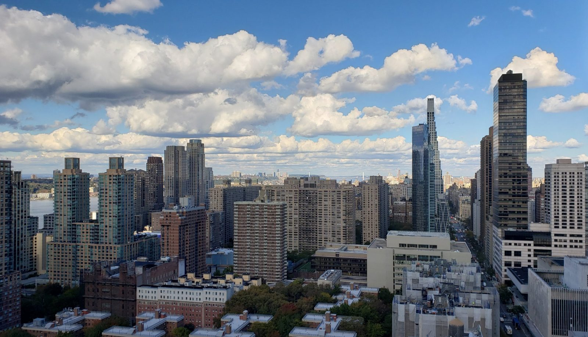

Housing · November 12, 2026
Restore 421-a and build an integrated city

Dear Mayor Mamdani,
You have said the city needs 700,000 new homes in the next decade. I agree. I want to talk about where those homes go, and who gets to live in them.
The problem
Under Mayor Bloomberg, the 421-a tax abatement came with a simple condition in the city's most prestigious neighborhoods: set aside 20% of the apartments as affordable, and the building's property taxes are reduced for up to 25 years. In the densest neighborhoods, the affordable apartments also earned a zoning bonus: the developer could build up to 20% more than otherwise allowed. That extra space made the projects economically viable. Over the life of the program, about 5,800 affordable apartments were built inside market-rate buildings this way. New Yorkers lined up for them. At 40 Riverside Boulevard on the Upper West Side, about 88,000 people applied for 55 affordable apartments. At Sky on West 42nd Street, about 91,000 households applied for 235.
Many publications called 40 Riverside the "poor door" building and claimed these projects separated rich and poor. It is false. These buildings let thousands of families move to premium neighborhoods and send their kids to better schools. That is how you build an integrated city, where lower-income families are not segregated in 100% affordable projects, and have a chance to connect with more accomplished and fortunate neighbors and build social capital. For children, it can change a life.
The abatement expired in 2022. Its replacement, 485-x, adds wage rules that start at 100 apartments, so builders now stop at 99. This spring, only 9 of 172 proposed buildings were that large. In two and a half years, builders have registered plans for about 4,200 affordable apartments under 485-x. Only 326 of them are in Manhattan, and more than five times as many are in the Bronx. We are building small, and we are building the affordable units where the city is already poorest.
My take
Critics will say the abatement costs the city money, but it doesn't. The city gets nothing when nothing gets built. Abatements end, and the buildings pay full taxes from that point on. The apartment buildings completed during the Bloomberg building boom, from 2004 to 2015, hold about 186,000 apartments and now bring about $1.9 billion a year in city property tax revenue. That will keep growing as their remaining abatements expire. The Bloomberg-era rules were simple and predictable, and builders used them.
One thing must change. Under the old program, the market-rate apartments were rent-stabilized for as long as the abatement lasted. After the Housing Stability and Tenant Protection Act of 2019, nobody will build a building whose apartments could stay regulated for decades. 485-x already leaves market-rate apartments free of rent regulation, and a restored 421-a must do the same. Otherwise, nothing will get built. Bring it back, without that trap.
What I'm asking you to do
- Make restoring the Bloomberg-era 421-a abatement a City Hall priority in Albany's 2027 session: as of right, 20% affordable in the strongest neighborhoods, market-rate apartments free of rent regulation, and no wage cliff at 100 units.
- Publish 485-x results every quarter, by building size and neighborhood, so New Yorkers can see where affordable homes are going.
- Meet with the builders who are cutting projects to 99 units, and ask what it would take to build 300 apartments.
New York has built its way out of housing shortages before, and it built integrated neighborhoods when it did. Let's do it again.
Sincerely,
Anya Levitov
What you can do
- Endorse the Dear Mamdani agenda.
- Send this letter to your state senator and Assembly member. 421-a is state law, and they vote on it.
- If you or someone you know got an apartment through a housing lottery in a market-rate building, tell us your story.
Sources
- 6sqft: 88,000 applicants at 40 Riverside Boulevard
- DNAinfo: 91,000 households applied for 235 apartments at Sky
- Manhattan Institute: 421-a issue brief
- Bisnow: REBNY second-quarter 2026 filings
- HPD: 485-x registrations, NYC Open Data
- City Planning: PLUTO tax lot data (buildings with 6+ apartments completed 2004–2015)